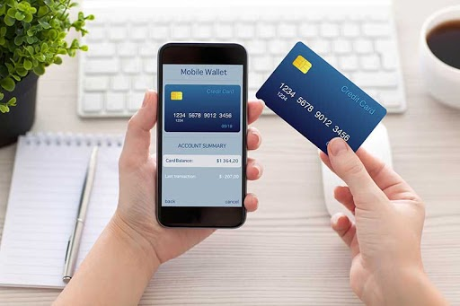
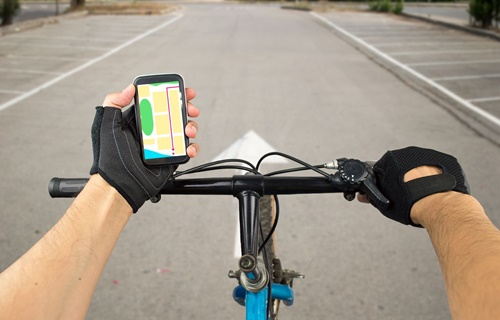
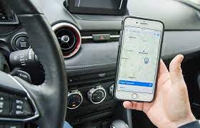
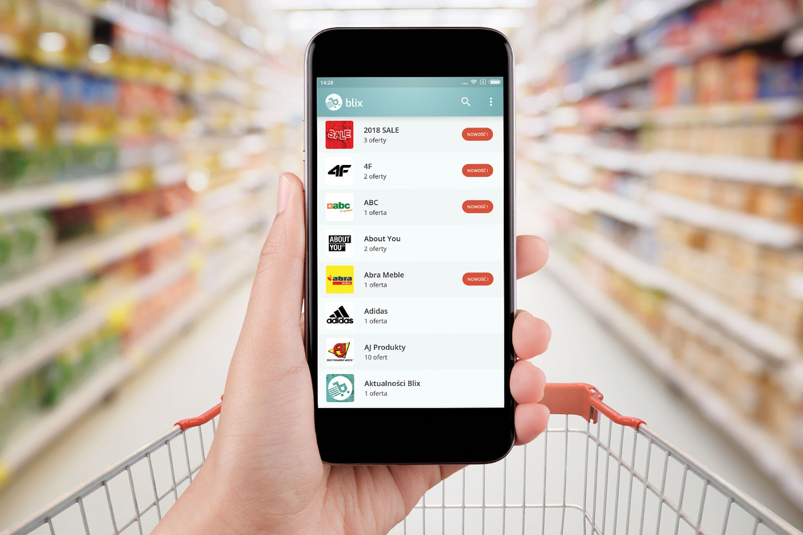

Zastosowania aplikacji
Aplikacje społecznościowe
Programy służące komunikacji aplikacje z zakresu mediów społecznościowych. Są podstawą dla użytkowników urządzeń mobilnych. Najpopularniejsze w tej kategorii są Snapchat, Facebook, Instagram, Tumblr, Twitter, Messenger, WhatsApp, Vine. Aplikacje typu Instagram czy Pinterest skupiają się na treściach wizualnych.
Aplikacje finansowe
Oprogramowanie bankowe pozwalające na: wykonywanie operacji na swoim koncie, ułatwiające kontakt z obsługą klienta i lokalizację potrzebnych placówek czy bankomatów. To nie tylko usługi bankowe, bo aplikacje finansowe to także wygodny sposób zarządzania domowym budżetem. Nieocenioną pomocą w kontrolowaniu wydatków (bez potrzeby gromadzenia paragonów, faktur) będą takie programy jak myMoney, Kontomierz, albo Kwitki.
Aplikacje sportowe
Nazywane niekiedy wirtualnymi trenerami, pomagają przy planowaniu treningu i monitorowaniu jego postępów. Służą wykonywaniu pomiarów, np. spalanych kalorii. Najpopularniejsze z aplikacji posiadają dużo opcji rejestrujących, takich jak pokonane trasy podczas biegania, jazdy na rowerze czy innej aktywności fizycznej. Zliczają czas trwania i prędkość aktywności. Co więcej, aplikacje te pozwalają na dzielenie się swoimi osiągnięciami z innymi, poprzez udostępnianie danych. Do najpopularniejszych aplikacji sportowych oferujących wymienione opcje należy Endomondo. Dla uprawiających jogę to Daily Yoga, dla biegaczy - Runtastic.
Aplikacje nawigacyjne
To przydatne w podróży mapy, wyznaczniki trasy, rozkłady jazdy komunikacji miejskiej. I tak dzięki Google Maps, Here WeGo, TomTomGo można zaplanować dowolną trasę zarówno dla samochodu, jak i roweru. Te aplikacje są znacznym ułatwieniem w poruszaniu się po dużych miastach. Taka appka jak Jakdojadę szybko pomoże wyznaczyć najbardziej optymalną trasę transportem publicznym, uwzględniając utrudnienia: remonty, zmiany w rozkładach (aktualizacje na żywo są ogromną zaletą tego typu aplikacji).
Aplikacje informacyjne
Zapewniają dostęp do newsów ze świata. Przykłady to Kiosk Google Play, który gromadzi informacje z różnych serwisów, lub Feedly, czytnik RSS, będący usługą agregującą informacje o popularnych postach umieszczanych na różnych serwisach internetowych.
Aplikacje zakupowe
Użytkownik może dzięki nim dokonać bezpośrednich zakupów, skorzystać z programu lojalnościowego ulubionej marki (poprzez udostępniane kupony, rabaty), być na bieżąco z promocjami dzięki gazetkom, porównać ceny między konkurencją. W tej grupie znajdą się też: serwis ogłoszeń lokalnych OLX czy znana na całym świecie platforma AliExpress.
Aplikacje do czytania i słuchania książek
Dla czytelników i miłośników audiobooków. Warto wymienić tu Legimi, czyli platformę do czytania ebooków, oraz katalogi audiobooków: Storytel, Audioteka. Najpopularniejsza marka czytników, Kindle, również ma swoją mobilną księgarnię, którą można zsynchronizować ze swoim czytnikiem.
Aplikacje multimedialne
Najbardziej znane i popularne w tej kategorii jest YouTube (największy portal z klipami), Netflix (największy serwis VOD). Dzięki Spotify można legalnie słuchać muzyki bez ograniczeń. Nieco inną formę proponuje np. aplikacja Shazam, skanująca dźwięki i odszukująca informacje o słuchanym utworze.